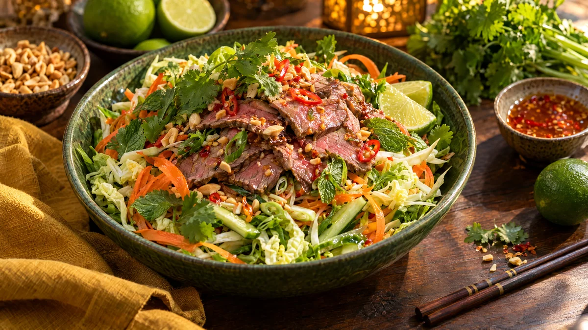

RESTFEST · RECEPTSallad · Huvudrätt
Krispig thaisallad på söndagsstekens rester med lime och jordnötter
De sista skivorna av söndagssteken, en bit kinakål och en morot. Köttet vänds med krispiga grönsaker, färska örter och en syrlig, het limedressing och toppas med rostade jordnötter. Färgsprakande som en sallad från ett gatukök i Bangkok, och lika god med köpt rostbiff.
- Förberedelse
- 20 min
- Tillagning
- 5 min
- Portioner
- 4
- Nivå
- Nybörjare
 Det här behöver du
Det här behöver du
JÄMFÖRT MED DIN KYL
Tryck på + vid det du behöver köpa.
Limedressing
Sallad
Topping
Gör så här
- Rör ihop limesaft, fisksås, socker, vitlök, chili och olja tills sockret har löst sig. Smaka av, dressingen ska vara syrlig, salt, söt och het på samma gång.
- Skär steken i tunna strimlor, ca ½ cm. Vänd dem i 2 msk av dressingen och låt dra medan du förbereder grönsakerna.
- Strimla kinakålen tunt. Hyvla moroten i tunna band med en potatisskalare. Dela gurkan på längden, skrapa ur kärnorna och skär den i tunna stavar. Skiva salladslöken snett.
- Rosta jordnötterna i en torr stekpanna i 2 minuter och hacka dem grovt.
- Vänd ihop kål, morot, gurka, salladslök och det mesta av örterna med resten av dressingen precis före servering, så att kålen behåller sitt knaprande.
- Lägg upp salladen och fördela köttet ovanpå.
Dekoration och servering
- Lägg köttstrimlorna i en luftig hög mitt på salladen så att de syns.
- Strö över jordnötter, resten av örterna och lite extra chili.
- Servera med limeklyftor och gärna kokt jasminris eller risnudlar.
- Byt jordnötterna mot rostade solrosfrön om någon vid bordet är allergisk.
Mått och ugnstemperaturer
Måtten är svenska (dl, msk, tsk, krm). Ugnstemperaturerna gäller vanlig ugn med över- och undervärme; med varmluft, sänk med 20 grader.